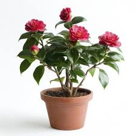
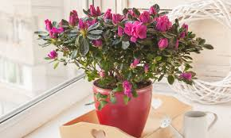
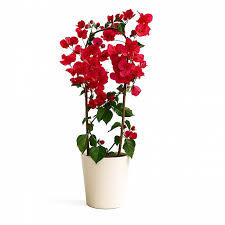
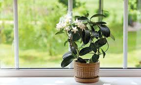
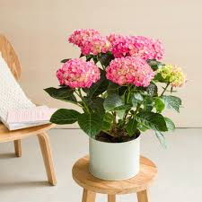
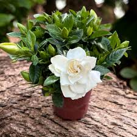
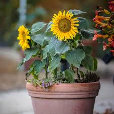
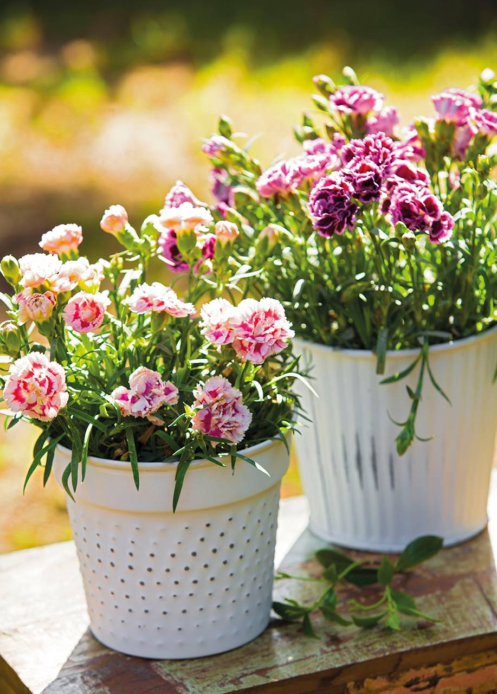
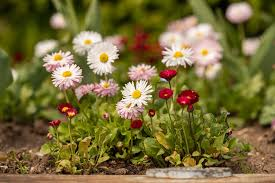

Camelia
las plantas florales camelias es una planta hornamental muy apreciada por sus flores elegantes y abundantes. Se caracteriza por tener hojas verdes brillantes y flores grandes.
ComprarBienvenida a la seccion de compras aqui podras encontrar las mejores plantas florales para tu hogar.

las plantas florales camelias es una planta hornamental muy apreciada por sus flores elegantes y abundantes. Se caracteriza por tener hojas verdes brillantes y flores grandes.
Comprar
Una planta ornamental muy aprecida por sus flores abundantes y coloridas, florece principalmente en primavera, planta de media sombra.
Comprar
las plantas santa rita, es una planta ornamental muy conocida por sus colores intensos y su abudante floracion. Arbusto o planta trepadora de crecimiento rapido, nesecita mucho sol directo para florecer bien.
Comprar
Muy conocida por sus flores delicadas y su aroma dulce, le gusta el sol directo o semisombra.
Comprar
Es una planta ornamental muy conocida por sus flores grandes y redondas, requiere riego frecuenta.
Comprar
Es una planta muy aprecida por sus flores blancas y su perfume intenso, se aconseja mantener el sustrato humedo.
Comprar

Una planta ornamental muy aprecidad por sus flores coloridas y su larga duracion, nesecita bastante sol para florecer bien.
Comprar
Una planta muy popular por sus flores sencillas y alegres, le gusta el sol directo o semisombra luminosa.
Comprar